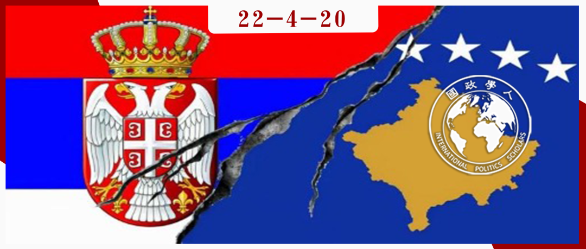
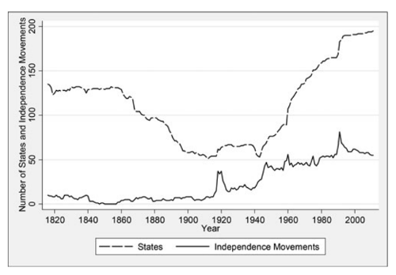

收录于合集

国家、民族和领土稳定：为什么中国的主导权会对国际秩序更有利？ ****
作者： RYAND.GRIFFITHS，雪城大学麦克斯韦公民与公共事务学院政治学系的副教授，研究重点是分离的动力以及对主权、国家制度和国际秩序的研究。
编译： 董黛（国政学人编译员，中国人民大学国际关系学院研究生）
来源： Ryan D. Griffiths (2016) States, Nations, and Territorial Stability: Why Chinese Hegemony Would Be Better for International Order, Security Studies , 25:3, 519-545, DOI: 10.1080/09636412.2016.1195628

导读
本文首先描述了自1945年以来存在的国际秩序，分析了领土完整和自决两种规范的背景，讨论了两种规范与国际权力结构的关系，并强调它们对国际政治的影响。 接着本文转向过去的国际秩序，研究这些规范是如何发展的，并将国际秩序置于两个不同的、往往相互竞争的规范传统中：主权至上和自由主义，在这一部分，本文展示了过去的国际秩序是如何平衡这些规范传统的，并具体说明了这些秩序在征服和国家诞生频率方面的特点，以及主权国家数量的趋势。接下来，本文展望未来，勾勒出一个由中国主导的国际秩序，研究了中国在这两个规范方面的战略利益和政治言论，并认为中国很可能倾向于领土完整而不是少数民族的自决权。然后，本文具体说明了当代国际秩序、过去的秩序和未来中国主导的潜在秩序之间的异同，认为中国的主导更有利于领土稳定。最后，本文对潜在的争议和反驳进行了讨论。
本文的行文逻辑清晰，结构完整，先分析了现存的国际秩序以及领土完整与民族自决原则之间的相互作用，然后对两种规范进行了溯源，接着又将视角投入未来，探讨了中国主导的国际秩序下两种规范的关系及其优势，并且回应了一些可能存在的质疑，对于国际秩序以及两种规范之间的张力从今到古再向未来地进行了梳理和分析。但是这些质疑是否完全回应清楚了依然有待讨论，中国是否能顺利取得主导权并获得大多数国家对于领土完整这一原则的支持并没有得到论证，而美国是否纯粹是因为支持民族自决多于支持领土完整而支持了科索沃也是一个有待讨论的问题。
编译
01
引言
2014年3月11日克里米亚宣布独立使国际政治中一个关键的规范性矛盾成为焦点：主权国家维护其领土完整的权利与少数民族决定其政治命运的权利之间的冲突。尽管奥巴马和许多其他西方领导人捍卫乌克兰的主权，但普京却通过援引自决原则和参考科索沃的先例来支持克里米亚独立，因为美国曾以牺牲塞尔维亚的主权为代价支持科索沃独立。虽然普京的真实动机和信念有待商榷，但他对西方虚伪性的巧妙强调是由于以下两方面促成的：首先是主权和自由主义两种规范传统相互竞争所造成的灰色地带，以及过去七十年美国试图同时尊重这两个规范的事实。尽管美国的意图通常是好的，但它所创造的国际秩序试图平衡主权和自由主义以及国家和民族之间的紧张关系的努力最终失败了。本文认为，一个不同的大国，特别是中国，会对这些规范做出不同的解释，并产生一个新的国际秩序。
一些学者预计，中国的崛起将类似于之前一些国家（如德意志帝国）的暴力崛起。《经济学人》曾有些调侃地问道：“为什么在中国之外很少有人支持其自称的‘和平崛起’理论？”其他人则预计，中国将选择在国际秩序内崛起而不是推翻秩序。从整体上看，这些问题是现代最重要的辩论之一的内容：中国的崛起将如何影响国际秩序？
本文采用了一种新的方法，强调两个相关的规范：领土完整和自决，前者提出了应维护政治边界的原则，后者则维护了无国籍民族的自我管理权。自20世纪中期以来，这两个规范都是国际生活的一个共同特征，本文认为这两种规范对征服的频率、国家的诞生以及国际体系中的国家数量产生了影响。但关键的是，这两种规范之间存在着一种紧张关系，于是现在的世界是一个两者都重要的世界，但两者都没有得到充分巩固。正是在这两种规范以及主权和自由主义的更大规范传统之间的碰撞中，大国可以通过有效地拨动砝码将天平转向国家或民族来影响地缘政治。
本文预测了国际政治的某些特征在中国掌握主导权的时代会是什么样子。在研究过程中本文回避了有关中国持续崛起的复杂问题，只确定中国目前对这些规范的偏好，并将它们投射到一个想象中的未来。本文试图勾勒出一个中国主导的国际秩序的原型。
本文认为，在中国主导的时代，历史之弧应该向强调国家主权的方向弯曲。在中国的主导下，国家间边界应该会更加稳定，而这种对现有领土格局的保守强调，会得到印度等其他崛起大国的支持。在这方面，中国的主导权确实会对国际秩序有好处。然而，这种“和平”是有代价的，因为边界稳定性的提高会降低对自决的支持，可能会禁止单边分裂，而且在涉及少数民族权利的情况下，世界的包容度会降低。
02
1945年以来的国际秩序
有两个规范是1945年后美国主导的国际秩序的关键特征。第一个是领土完整规范，它认为国家应该有权维护其边界。与早期普遍存在征服的时期不同，1945年后只有两个国家被征服。国际社会对伊拉克占领科威特的谴责，以及由此产生的恢复国家的努力，都证明了该准则的力量。第二个准则，自决，即维护一个国家控制其政治命运的权利。 从理论上讲，这一准则旨在适用于所有国家，无论其定义如何，但它与大国中的少数民族尤其相关。这一准则通常归功于伍德罗·威尔逊，他提出“所有明确的民族愿望都应得到最大程度的满足。”

图1 主权国家和独立运动（1816-2011）
自决准则的一个后果是出现了前所未有的独立运动浪潮。虽然这种运动在第一次世界大战之前的几年中很少见，但在战争结束后出现了分离主义的浪潮。事实上，规范的影响作用在这些运动的言论中是显而易见的。但是，尽管有自决原则，但是很少有国家愿意尊重自决的要求，而威尔逊在1920年的政治失败，以及美国向孤立主义的退却，使该准则的最大倡导者变得沉默。然而，美国在二战期间的重新崛起，以及随后联合国的成立，有助于巩固这一准则。在1945年后的时代，主权国家的数量从64个增加到192个以上，增加了两倍多。
自决权鼓励少数民族寻求独立，而领土完整原则既支持又阻挠了他们的努力。扶持民族自决的效果是独立后的安全问题不再成为获得独立的阻力。领土完整的负面效应是，虽然它使国际体系的危险性降低，对独立运动更有吸引力，但它同时也使主权更难获得。笔者认为，领土完整和自决都没有得到完全的巩固（也就是说，相关的行为者还没有完全社会化），因为这两个规范是相互矛盾的。不受限制地接受自决权会破坏领土完整规范，因为少数民族可以不顾国家的意愿自由分离。反之，完全承诺维护现有的领土格局会使有志向的国家的分离权失效。正是由于这种紧张关系，1945年后的国际秩序在对国家权利和民族权利进行仲裁时允许有一定程度的自由裁量权。但是，这种自由裁量权阻碍了任何一种规范的全面国际化，因为行为者被期望在任何特定情况下平衡两者的优点。
这种规范性紧张关系的产物是一个以国家的半控制性扩散为特征的国际秩序。国际法律界试图通过规定少数民族享有独立权的条件来平衡这些规范。南斯拉夫和苏联等解体国家的民族享有独立权，但这些都是事后确定的，无论如何都不会适用于所有民族（例如车臣和鞑靼斯坦）。尽管战后平衡这些规范的努力是出于良好的愿望，但对这两种规范的推动却在通往国家地位的道路上造成了一种模糊不清的感觉。研究表明，分离主义领导人通常都很了解情况，认为国际承认制度有一定的灵活性，有可能满足他们的要求。
总而言之，自1945年以来，国际秩序的特点是半控制的国家扩散，其中有三个决定性的特点。首先，国家的数目增多了，这是对早期国家聚集趋势的逆转（见图1）。第二，独立运动也激增了。少数民族通过寻求独立来应对国际环境，而新的分离主义运动不断兴起并取代那些已经分离的国家。第三，有的民族有时甚至在没有主权国家同意的情况下进行分离，因此，国家的增加只是部分地受到控制。
03
规范性变化和过去的国际秩序
在讨论中国问题之前，有必要将领土完整和自决置于更大的规范性传统中，并回顾国际秩序在过去几个世纪中的变化。Wayne Sandholtz和Kendall Stiles认为，国际规范通常来自两个传统中：强调个人权利的自由主义规范和强调国家的主权主义规范。正是在这两个传统的规范性较量中，强调人权的规范（例如，人道主义干预、反种族灭绝和保护公民的责任）与主权国家管理自己事务的权利发生了冲突。
在这两个传统交汇处的许多摩擦点中，领土完整和自决之间的矛盾是最突出的一个。毕竟，这两种规范都代表着强大的、有说服力的理念。领土完整是为了保护国家的主权，主要是通过禁止领土侵略，并从侧面防止分裂。自决权包含了无国籍国家的积极和消极权利，自由主义的取向在分离的伦理论证中是显而易见的。
重要的是，这两种规范之间并不存在自动或必然的矛盾。这取决于援引自决权的国家的领土地位。在这里，我们可以勾勒出民族和国家之间关系的三种基本配置。第一种是民族拥有自己的国家，领土完整和自决之间没有冲突。第二种情况是一个民族被包括在了或同时存在于几个国家，这里有一个潜在的规范性冲突，取决于统一的自愿程度。第三种情况是，一个少数民族被塞进一个国家，正是在这种情况下，自决往往与领土完整发生冲突。
在分析一般的主权和自由主义之间的冲突，特别是领土完整和自决之间的冲突时，Sandholtz和Stiles的模型很有用。他们用一个循环模型来解释规范的变化是一个动态过程：这些争端往往因战争或重大政治或技术变革而产生，通过争论得到解决，从而产生一套新的或修改过的规则和规范，完成循环。是什么决定了谁在特定的争端中获胜？Sandholtz和Stiles认为，最有说服力的行为者通常是强者。强大的行为者领导的变革呼吁先例和规范性传统，而国际生活中的主导传统是主权和自由主义，规范并不只是权力的表象；行为者需要在思想的较量中获胜。
04
比较国际秩序
如果我们把历史的镜头打开到最宽广的范围，我们就可以发现主权和自由规范之间的竞争的广泛模式，以及这种冲突对国家和民族的影响。第一个时期是1815年以前的时代，在这一时期，主权规范占主导地位，自由主义传统方兴未艾，最明显的是在美国和法国革命时期，事实上，在国家间关系中，征服是一种常见的现象，自决原则基本上是不存在的。第二个时期，即事实上的国家时代，大约涵盖了从维也纳会议到第一次世界大战结束的100年。主要的发展是自决规范的早期愿景的崛起。从19世纪初的拉丁美洲独立运动开始，英国和美国引领了一种外交惯例的发展，即第三方应该保持中立，只有在分离主义者能够显示出对该领域的控制并展示出一个可行的政府时，才承认独立努力。
总的来说，这两个时期在征服的频率、国家的诞生和主权国家的总数量方面有着相似的影响。这种相似性的一个主要原因是没有一个禁止征服的规范。征服是很常见的，而这一事实本身无疑对潜在的分离主义者起到了某种威慑作用。此外，一个国家要想分离，就必须战胜他们的主权国家；这不是一件容易的事。这些因素加在一起，有效地过滤了潜在和实际的分离主义者。最终的结果是，国际秩序中国家的沦亡超过了国家的诞生，国家的数量也在减少。如果说以前的原则是一个民族有权在不受外界干预的情况下赢得自己的主权，那么威尔逊的贡献是让国际社会有义务协助这些努力。一个以构成性承认为基础的国际制度诞生了——也就是说，根据商定的标准授予独立的资格，不管他们是否有能力战胜其主权国家。这种方法的困难人们担心缺乏一致标准会鼓励分裂。威尔逊的国务卿罗伯特·兰辛指出了这个问题，他说：“当总统谈到自决的时候，他想到的是什么单位？他指的是一个种族，一个领土区域，还是一个社区？如果没有一个明确的实用单位，这一原则的应用对和平与稳定是危险的。”
“构成性国家”的时代可以一分为二。第一个时期基本上是“战间期”，对国家和民族来说是一个动荡不安的时期。在第一次世界大战结束时，分离主义出现了明显的高峰。这些努力大多在一个没有准备好满足自决的全部含义的国际体系中失败了。除了从哈布斯堡帝国和奥斯曼帝国的残骸中出现的一些国家外，大多数有自决抱负的民族没有得到承认。同时，领土完整的准则并不存在，征服仍然是一个现实。
战间期与此后的时期有两个关键区别。首先，领土完整在《联合国宪章》中得到巩固，征服终于在很大程度上变成了一种禁忌。仅此一点就能降低国家的消失率。第二，国际承认制度发生了变化；这一变化不是在理论上，而是在过程中。在这个国际体系中，分离主义很普遍，而且只受到部分控制，征服现象很少，而国家却在不断增加。
法布里在他对国际秩序的历史分析中公然指出，如果国际社会回到事实承认的做法，情况会更好。他认为，“当有关各方对谁以及通过何种自决程序可以成为一个国家没有达成协议时，事实上的国家地位已被证明是唯一可行的国际标准——在过去200年的大部分时间里都是如此。”这种方法的主要优点之一是，它通常会淘汰不适合的国家。法布里承认事实上的制度的弱点：对于什么是事实上的国家仍然可能存在分歧，干预仍然可能发生，规则的应用可能会被强大的国际行为者所牵制。
前面的讨论强调了某一国际秩序在国家和民族方面的优势和劣势。目前的秩序位于主权和自由主义传统之间，领土完整和自决的规范是该秩序的关键特征。但是，随着一种规范性传统相对于另一种规范性传统的上升，以及权力的基本结构的变化，这种秩序会发生变化。在中国成为主导力量的未来，我们应该期待什么，这个未来与目前的秩序和过去的秩序有什么不同？
05
中国主导时代的国际秩序
中国是满足于目前的国际秩序，还是像过去许多崛起的国家一样，旨在修改国际秩序？国际规则结构是建立在权力和对先例和规范传统的呼吁之上的。中国将致力于修改国际秩序，但重要的是，中国不会试图重新划分边界。本文通过研究中国目前在自决和领土完整方面的偏好来得出这一结论，且认为这些偏好在中国主导的时代应该持续存在。
在自决方面，中国的政策显示出对少数民族的支持较为有限。 当分离是在双方同意的情况下，中国承认分离，但当处于分离危机中的国家政府否认寻求分离的有志之士主张时，中国认为应尊重主权，斗争的结果应在内部解决，不应受到国际社会的干涉。中国始终认为，通过谈判达成塞尔维亚和科索沃都能接受的方案是解决这一问题的最佳途径。中国呼吁塞尔维亚和科索沃继续谈判，在国际法框架内妥善解决，共同维护巴尔干地区的和平与稳定。此外，中国对最近南苏丹的分离采取了类似的立场；承认南苏丹需要与苏丹正式达成共识。
中国对自决的解释更加严格，部分原因是其国内对分裂的担忧。 完全接受自决对多民族国家来说是个问题。中国在有限的意义上承认无本族国家的民族的权利，即他们应该有更大的自主权。而自1958年以来，中国已经承认了五个自治：宁夏、西藏、广西、新疆和内蒙古。然而，国家在完全独立方面划定了一条界限。对中国来说，在未经政府同意的情况下承认分离地区，存在着开创先例的担忧，这些担忧在有关国内外分离主义运动的政治和民众言论中都很明显。总的来说，在中国主导的时代，对新国家的承认将以国家同意为前提，因此也就不那么频繁。中国对领土完整的外部意义的承认是一个有争议的话题。本文认为尽管中国将越来越多地坚持对邻国的主导权，但中国可能会坚持其现有的领土要求，不会剥夺国家的主权并将其变成中国的财产。
首先，中国的领土争端并不是基于对其他主权国家的主权要求，总的来说，也不是对这些国家的关键部分的争端。更重要的是，现在的趋势是和解而不是升级。事实上，中国已经表现出谈判的倾向性，尤其是在中国强大的时候。第二，中国对维护领土完整准则有着强烈的兴趣，这一点不太可能改变。尽管中国对该准则的主要应用是针对国内地区，但它必须全面接受该准则。总的来说，中国经常援引该规范，其全部分量应继续影响中国的领土政策。
这一讨论提出了一个有趣的问题：领土现状是如何确定的。现有的领土格局已经通过外交、战争以及其他塑造国际关系的公平和不公平的做法来确定。正是在这样的情况下，双方都可以援引领土完整，冲突更可能变为现实。但这些情况数量有限，植根于历史，而不是简单地凭空捏造。现有的领土格局将决定中国调用领土准则的能力。
总而言之，中国应该通过将平衡从自决转向领土完整来影响国际秩序。中国坚持支持内部意义上的领土完整是非常重要的，只有在同意的情况下，中国才会承认独立主张。
06
“中国治下和平”（Pax Sinica）
本文认为中国的主导权将以牺牲自决权为代价，优先考虑领土完整。 其结果将是一个在某些方面类似于早期的国际秩序。 主权规范将再次占据主导地位，而自由规范将从属于国家的权利。总的结果将是一个令人惊讶的稳定的国际秩序，即“中国治下和平”。
鉴于中国对主权的重视和其内部分裂的压力，中国将把规范的平衡转移到只有在主权同意的情况下分离才是合法的。主权将占上风，历史之弧将摆向国家权利一侧。
重要的是，这并不是简单地回到19世纪。19世纪的承认政治具有自由主义色彩，正如法布里所言，美国和英国在承认战胜中央政府的分离地区时，常常无视国家的主权。事实上，中国的主导更像18世纪而不是19世纪，当时各国紧紧抓住主权原则，只在同意的情况下给予承认。
然而，中国的主导也将具有现代特征。主要的区别在于主权的概念和领土完整规范的必然发展。如果领土完整的准则得到中国的支持，国家的消失将是一种罕见的现象。 与18和19世纪国家数量通过征服和加入逐渐减少的情况不同，很少有国家会退出这个体系，除非它们自愿选择与其他国家统一。
这种对中国主导下的领土稳定的预期关注，与当代和历史上的政治学说都是一致的。儒家强调的强大而稳定的国家在最近的政治口号中得到了呼应，如“稳定与和谐”。本文在文章一开始就宣称，“ 中国治下和平 ”对国际秩序来说会更好。本文对“更好”的定义是狭义的，强调领土稳定，这可以通过几种方式来评估。外部侵略者或内部分离主义者通过暴力更改主权边界的频率如何？分离主义内战的频率是多少？在分离和承认的问题上，国际上有多少不和？
在这些条件下分析，美国秩序和想象中的中国秩序之间的关键差异与分离和主权承认的政治有关。过去七十年来，美国主导的秩序试图通过制定哪些国家有资格独立的规则来平衡领土完整和自决的规范。鉴于国际生活中的政治和冲突的原则（以及规范性争论的不断发展），不一致、模糊和对虚伪的指责是不可避免的。由此产生的政治空间给国家和民族主义运动带来了不确定性，即自决权何时适用，何时应服从于领土完整。
分裂主义内战是当代的一个常见特征。分离主义是少数（也许是唯一）暴力策略比非暴力策略更有效的政治抗争形式之一。在领土稳定方面，当代人关注的不是传统的领土征服，而是国家分裂所带来的威胁。这并不是说分裂主义冲突在和平时期会完全消失。许多内战的原因仍然存在。尽管每场冲突都有一个地方性的因素，但所采用的战略和策略，以及各团体继续战斗的意愿，都是由国际承认制度中固有的可能性决定的。相对于以同意为基础的秩序，目前的构成性制度创造了挑战国家的激励机制。最终的承认不是由某个总体性的法律机构赋予的；它掌握在具有不同利益的个别主权国家手中。本文预测的中国秩序远非理想，但它比目前的秩序更有优势。
07
潜在的批评
对本文的论点有一些潜在的批评。其一是，中国要想简单地逆转自决准则的进展，以及可能的其他必然的自由准则并不那么容易。笔者认为， 虽然一些国家可能会抵制，但中国在规范方面并不孤单。 中国能否强调主权规范而牺牲自由规范，将取决于它能否说服其他国家并在思想斗争中获胜。如果中国的观点与普遍观点相悖，那么这项任务就会更加艰巨。
第二个潜在的批评是，从一个崛起的国家目前的行为推断其未来的偏好或意图是困难的，甚至是不可能的，因为一个国家想要什么或相信什么往往会随着权力而改变。本文并不认为其自然结果是一个国家会以扩张领土为目标。相反， 领土的修正和扩张只是强国的一种行为方式；它并不是不可避免的。
最后，批评者可能会认为，中国将逐渐接受自由主义传统，因为中国正在现代化，而自由主义价值观最终是普遍的和现代的。 然而，现代化也可以确实在没有自由主义价值观的情况下发生，认为两者必然相随的信念实际上是一种西方的乐观主义，甚至是自负的形式。 如果中国真的接受了自由主义准则，我们仍然可以期待它比美国更接近主权传统。
如果中国不这样做，而主权传统在和平年代占了上风，那么过去的两百年看起来会更像是一种历史反常现象。历史之弧将回到国家主权权利再次占主导地位的时代。
词汇整理
民族自决 self-determine
领土完整 territorial integrity
审校 | 赖永祯 姚博闻
排版 | 顾金源 王慧瑜
文章观点不代表本平台观点，本平台评译分享的文章均出于专业学习之用, 不以任何盈利为目的，内容主要呈现对原文的介绍，原文内容请通过各高校购买的数据库自行下载。

国政学人
支持学术公益与知识传播
微信扫一扫赞赏作者 __赞赏
已喜欢，对作者说句悄悄话
取消 __
发送给作者
发送
最多40字，当前共字
上一页 1/3 下一页
长按二维码向我转账
支持学术公益与知识传播
受苹果公司新规定影响，微信 iOS 版的赞赏功能被关闭，可通过二维码转账支持公众号。